01 Homeとトーク
Home／人の一覧／AIトーク／設定
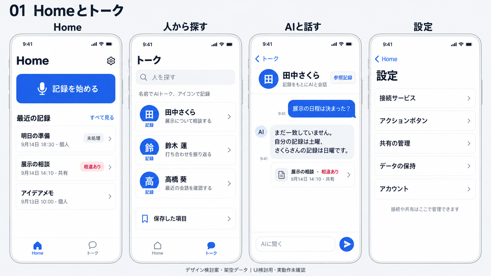
この画像の生成指示
Use case: ui-mockup. Produce a high fidelity original Japanese mobile app design comparison board, landscape 3840x2160 target, FOUR equal portrait screens side by side, each 390x844 proportions. Flat front views, minimal thin rounded frames, no photorealistic device, no perspective. Big crisp legible Japanese glyphs; no tiny text. Use generous margins outside screens for the board title, four panel labels, and footer. The four screens should occupy almost all usable image height. This is a conversation recording / context AI app, NOT a human messaging app or productivity dashboard. STYLE consistently for entire series: elegant iOS-native, restrained Apple hierarchy/proximity and baseline-ui discipline, LINE-like people navigation, Slack-like aligned simple rows. White #FFFFFF main surfaces, very pale gray #F5F6F8 backing, dark navy-black #17202B text, ONE solid blue #245CDF primary accent. SF Pro-like system sans with excellent Japanese; body17pt equivalent, title28pt, section20, metadata14, touch zones48x48 equivalent. Medium regular body, bold only headings. Thin separators, modest rounded16 surfaces, ample breathing room, NO gradients, NO glow, NO huge color cards, NO dense dashboard, NO extraneous icons. Only main bottom tabbar background, recording controls panel, common recording strip may be subtle light iOS Glass. Headers/body/chat/composer/sheets/source lists and start-record CTA are fully OPAQUE. Secondary screens have native back header, no unnecessary bottom tabs. Root bottom tabs exactly "Home" and "トーク" with icon+label. No integration tab, no tasks or calendar tab. All data fictional. Every image must include outside screen footer EXACT "デザイン検討案・架空データ｜UI検討用・実動作未確認". No actual app success verification implied. Consistent fictional person "田中さくら"; shared record "展示の相談", 9月14日14:10, conflicting originals 自分 "展示は土曜にしよう。" and さくら "展示は日曜にしよう。" Never silently resolve conflict. Original input owner is not confirmed speaker. Current on-screen date 9月14日. Fictional personal "明日の準備" 9月14日18:30. No logos of a real product except named integration text. BOARD title "01 Homeとトーク", panel labels "Home", "人から探す", "AIと話す", "設定". Screen1 Home: iOS 9:41 status. Heading "Home" with small settings gear top right. Breathing room then solid blue opaque main button microphone + "記録を始める". Under section "最近の記録", right small "すべて見る". Three simple separated rows: "明日の準備", metadata "9月14日 18:30 · 個人", gray small status "未処理"; "展示の相談", metadata "9月14日 14:10 · 共有", text status "相違あり"; "アイデアメモ", metadata "9月13日 10:00 · 個人". Spacious quiet lower portion, not more feature cards. Bottom Home selected. Screen2 root "トーク", search field "人を探す". One short guide "名前でAIトーク、アイコンで記録". Three people rows with blue monogram avatars, name bold, subtitle: "田中さくら" / "展示について相談する"; "鈴木 蓮" / "打ち合わせを振り返る"; "高橋 葵" / "最近の会話を確認する". Avatars have visible small "記録" label beneath to expose separate action; tapping names is AI. Small toolbar bookmark label "保存した項目". Bottom トーク selected. Screen3 native back "トーク", header avatar + "田中さくら", sublabel "記録をもとにAIと会話", distinct small "参照記録" button. User bubble "展示の日程は決まった？". AI label "AI", answer "まだ一致していません。自分の記録は土曜、さくらさんの記録は日曜です。" Compact cited source button "展示の相談 · 相違あり". Opaque white composer bottom "AIに聞く" plus blue send arrow. NO claim that messages are sent to Sakura. Screen4 native back "Home", title "設定". Opaque grouped simple settings list rows "接続サービス", "アクションボタン", "共有の管理", "データの保持", "アカウント". Tiny chevrons, no fake toggles. Lots of whitespace. Footer inside screen "接続や共有はここで管理できます".
02 録音から個人記録へ
オフライン／録音中／端末保存済み・未送信／保存失敗
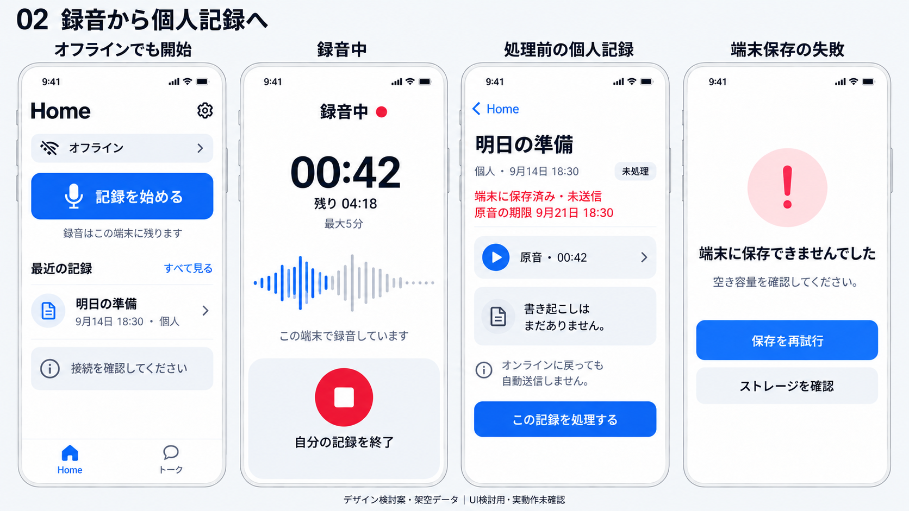
この画像の生成指示
Use case: ui-mockup. Produce a high fidelity original Japanese mobile app design comparison board, landscape 3840x2160 target, FOUR equal portrait screens side by side, each 390x844 proportions. Flat front views, minimal thin rounded frames, no photorealistic device, no perspective. Big crisp legible Japanese glyphs; no tiny text. Use generous margins outside screens for the board title, four panel labels, and footer. The four screens should occupy almost all usable image height. This is a conversation recording / context AI app, NOT a human messaging app or productivity dashboard. STYLE consistently for entire series: elegant iOS-native, restrained Apple hierarchy/proximity and baseline-ui discipline, LINE-like people navigation, Slack-like aligned simple rows. White #FFFFFF main surfaces, very pale gray #F5F6F8 backing, dark navy-black #17202B text, ONE solid blue #245CDF primary accent. SF Pro-like system sans with excellent Japanese; body17pt equivalent, title28pt, section20, metadata14, touch zones48x48 equivalent. Medium regular body, bold only headings. Thin separators, modest rounded16 surfaces, ample breathing room, NO gradients, NO glow, NO huge color cards, NO dense dashboard, NO extraneous icons. Only main bottom tabbar background, recording controls panel, common recording strip may be subtle light iOS Glass. Headers/body/chat/composer/sheets/source lists and start-record CTA are fully OPAQUE. Secondary screens have native back header, no unnecessary bottom tabs. Root bottom tabs exactly "Home" and "トーク" with icon+label. No integration tab, no tasks or calendar tab. All data fictional. Every image must include outside screen footer EXACT "デザイン検討案・架空データ｜UI検討用・実動作未確認". No actual app success verification implied. Consistent fictional person "田中さくら"; shared record "展示の相談", 9月14日14:10, conflicting originals 自分 "展示は土曜にしよう。" and さくら "展示は日曜にしよう。" Never silently resolve conflict. Original input owner is not confirmed speaker. Current on-screen date 9月14日. Fictional personal "明日の準備" 9月14日18:30. No logos of a real product except named integration text. BOARD title "02 録音から個人記録へ"; panel labels "オフラインでも開始", "録音中", "処理前の個人記録", "端末保存の失敗". S1 Home offline showing compact opaque strip "オフライン", opaque blue "記録を始める", one line "録音はこの端末に残ります". Recent-record two rows metadata personal/shared. Bottom Home/トーク. No automatic uploading language. S2 U02 record view, top "録音中", large elapsed "00:42", "残り 04:18", small "最大5分". Simple restrained flat waveform representing fictional input; label "この端末で録音しています". Lower light glass controls panel ONLY containing large STOP square and "録音を終了". No pause/AItranscription/automatic share. S3 U03 native backHome title "明日の準備", meta "個人 · 9月14日 18:30", status "この端末に保存済み", badge "未処理". Opaque audio row play "原音 · 00:42". Text "書き起こしはまだありません". Notice "オンラインに戻っても自動送信しません". Opaque blue "この記録を処理する". Secondary "あとで". Fictional locally saved state, not externally processed or shared. S4 U02 recovery, "端末に保存できませんでした", explanation "空き容量を確認してください。". Primary "保存を再試行", secondary "ストレージを確認". No success badge, no saved success claim, no automatic discard. Keep same visual family as reference but FLAT uniform colors, no button shading and no unnecessary boxes around every list row. 最終修正指示: Edit this board preserving 4-screen positions and all unrelated text. S1 offline Home: REMOVE shared record title "展示の相談", its time and person/icon. Replace whole shared row with generic no-detail notice "接続を確認してください". Keep ownrecord明日の準備 and startCTA. S2 recording: add small clearly RED dot beside 録音中. Make stop circle RED with white square, and label exactly "自分の記録を終了". Keep00:42/04:18/max5minutes. S3 below title/mdate add conspicuous TWO state lines "端末に保存済み・未送信" and "原音の期限 9月21日18:30". Keepplay00:42 and未処理; make space by removing "あとで" graybutton if necessary. Keep no-auto-send notice and この記録を処理する. S4 unchanged. Flatbluefills, no gradients. Preserve footer.
03 記録を探す
人別テキスト／人別音声／全記録／条件0件
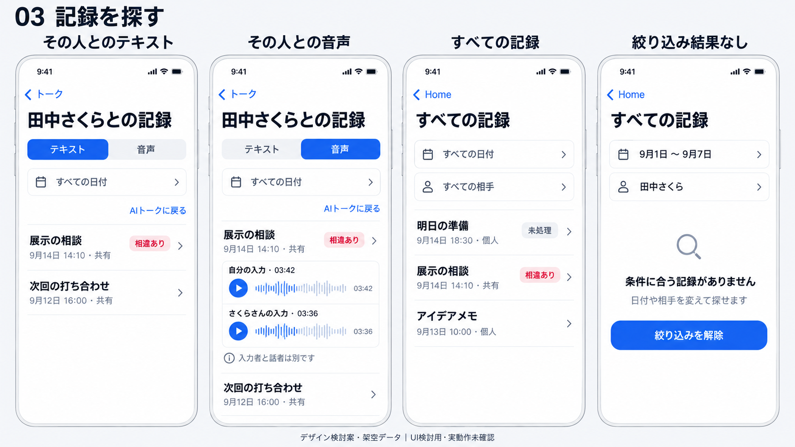
この画像の生成指示
Use case: ui-mockup. Produce a high fidelity original Japanese mobile app design comparison board, landscape 3840x2160 target, FOUR equal portrait screens side by side, each 390x844 proportions. Flat front views, minimal thin rounded frames, no photorealistic device, no perspective. Big crisp legible Japanese glyphs; no tiny text. Use generous margins outside screens for the board title, four panel labels, and footer. The four screens should occupy almost all usable image height. This is a conversation recording / context AI app, NOT a human messaging app or productivity dashboard. STYLE consistently for entire series: elegant iOS-native, restrained Apple hierarchy/proximity and baseline-ui discipline, LINE-like people navigation, Slack-like aligned simple rows. White #FFFFFF main surfaces, very pale gray #F5F6F8 backing, dark navy-black #17202B text, ONE solid blue #245CDF primary accent. SF Pro-like system sans with excellent Japanese; body17pt equivalent, title28pt, section20, metadata14, touch zones48x48 equivalent. Medium regular body, bold only headings. Thin separators, modest rounded16 surfaces, ample breathing room, NO gradients, NO glow, NO huge color cards, NO dense dashboard, NO extraneous icons. Only main bottom tabbar background, recording controls panel, common recording strip may be subtle light iOS Glass. Headers/body/chat/composer/sheets/source lists and start-record CTA are fully OPAQUE. Secondary screens have native back header, no unnecessary bottom tabs. Root bottom tabs exactly "Home" and "トーク" with icon+label. No integration tab, no tasks or calendar tab. All data fictional. Every image must include outside screen footer EXACT "デザイン検討案・架空データ｜UI検討用・実動作未確認". No actual app success verification implied. Consistent fictional person "田中さくら"; shared record "展示の相談", 9月14日14:10, conflicting originals 自分 "展示は土曜にしよう。" and さくら "展示は日曜にしよう。" Never silently resolve conflict. Original input owner is not confirmed speaker. Current on-screen date 9月14日. Fictional personal "明日の準備" 9月14日18:30. No logos of a real product except named integration text. BOARD title "03 記録を探す"; panel labels "その人とのテキスト", "その人との音声", "すべての記録", "絞り込み結果なし". S1 native backトーク title "田中さくらとの記録". Segmented "テキスト / 音声" text selected. Date filter chip "すべての日付". Separated rows "展示の相談" meta "9月14日 14:10 · 共有" status "相違あり"; "次回の打ち合わせ" meta "9月12日 16:00 · 共有". Small link "AIトークに戻る". S2 same title audioselected. Group "展示の相談", metadata same. TWO opaque audio rows "自分の入力 · 03:42", "さくらさんの入力 · 03:36", each playicon, fine waveform. Explicit caption "入力者と話者は別です". Anotherdatedgroup "次回の打ち合わせ" compact. No fake merged audio. S3 native backHome heading "すべての記録", date and person filters, rows newest first "明日の準備 / 9月14日18:30 · 個人 / 未処理", "展示の相談 / 9月14日14:10 · 共有 / 相違あり", "アイデアメモ / 9月13日10:00 · 個人". Personalunassigned accessible. S4 same all-records filter "9月1日〜9月7日" and "田中さくら", centered small searchicon text "条件に合う記録がありません", explanation "日付や相手を変えて探せます". One primary "絞り込みを解除". Keep same visual family as reference but FLAT uniform colors, no button shading and no unnecessary boxes around every list row.
04 原文と出典を確かめる
個人の書き起こし／共有の相違／双方の出典／自分の訂正
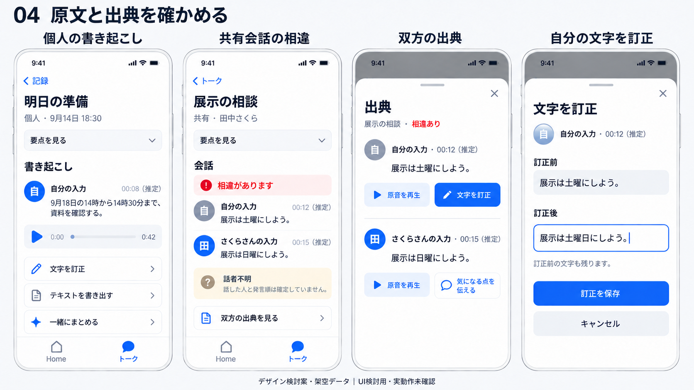
この画像の生成指示
Use case: ui-mockup. Produce a high fidelity original Japanese mobile app design comparison board, landscape 3840x2160 target, FOUR equal portrait screens side by side, each 390x844 proportions. Flat front views, minimal thin rounded frames, no photorealistic device, no perspective. Big crisp legible Japanese glyphs; no tiny text. Use generous margins outside screens for the board title, four panel labels, and footer. The four screens should occupy almost all usable image height. This is a conversation recording / context AI app, NOT a human messaging app or productivity dashboard. STYLE consistently for entire series: elegant iOS-native, restrained Apple hierarchy/proximity and baseline-ui discipline, LINE-like people navigation, Slack-like aligned simple rows. White #FFFFFF main surfaces, very pale gray #F5F6F8 backing, dark navy-black #17202B text, ONE solid blue #245CDF primary accent. SF Pro-like system sans with excellent Japanese; body17pt equivalent, title28pt, section20, metadata14, touch zones48x48 equivalent. Medium regular body, bold only headings. Thin separators, modest rounded16 surfaces, ample breathing room, NO gradients, NO glow, NO huge color cards, NO dense dashboard, NO extraneous icons. Only main bottom tabbar background, recording controls panel, common recording strip may be subtle light iOS Glass. Headers/body/chat/composer/sheets/source lists and start-record CTA are fully OPAQUE. Secondary screens have native back header, no unnecessary bottom tabs. Root bottom tabs exactly "Home" and "トーク" with icon+label. No integration tab, no tasks or calendar tab. All data fictional. Every image must include outside screen footer EXACT "デザイン検討案・架空データ｜UI検討用・実動作未確認". No actual app success verification implied. Consistent fictional person "田中さくら"; shared record "展示の相談", 9月14日14:10, conflicting originals 自分 "展示は土曜にしよう。" and さくら "展示は日曜にしよう。" Never silently resolve conflict. Original input owner is not confirmed speaker. Current on-screen date 9月14日. Fictional personal "明日の準備" 9月14日18:30. No logos of a real product except named integration text. BOARD title "04 原文と出典を確かめる"; panel labels "個人の書き起こし", "共有会話の相違", "双方の出典", "自分の文字を訂正". S1 U03 back記録 title "明日の準備", metadata "個人 · 9月14日18:30". Compact collapsed "要点を見る". Heading "書き起こし", owner "自分の入力", timestamp "00:08", body "9月18日の14時から14時30分まで、資料を確認する。". Opaque audio row. Secondary actions "文字を訂正", "テキストを書き出す", "一緒にまとめる". S2 U06 title "展示の相談", "共有 · 田中さくら", collapsed要点row. Heading "会話", text "相違があります". Two equal visible candidates "自分の入力：展示は土曜にしよう。" and "さくらさんの入力：展示は日曜にしよう。". Badge "話者不明", caption "話した人と発言順は確定していません". "双方の出典を見る". No winning candidate or timelineorderarrows. S3 U07 TALL OPAQUE white source sheet ~90percent screen above dim solid-gray backdrop, header "出典", close. Metadata "展示の相談 · 相違あり". First group "自分の入力 · 00:12", "展示は土曜にしよう。", auxiliary "原音を再生", solid blue "文字を訂正". Divider. Other group "さくらさんの入力 · 00:15", "展示は日曜にしよう。", auxiliary "原音を再生", text "気になる点を伝える". Both readable simultaneously. No blurred or fading source body. S4 U08 opaque correction sheet title "文字を訂正", "自分の入力 · 00:12". Label "訂正前" / "展示は土曜にしよう。". Editable field "訂正後" / "展示は土曜日にしよう。". Help "訂正前の文字も残ります". Main "訂正を保存", secondary "キャンセル". Keep same visual family as reference but FLAT uniform colors, no button shading and no unnecessary boxes around every list row. 最終修正指示: Edit this board minimally. S1 personal audio player total "0:25" MUST be "0:42" to match same fictional recording elsewhere. On S2/S3/S4 ALL source position labels 00:12 /00:15 add compact "（推定）". Also S1 source00:08 add（推定）. Keep both conflicting originals, inputowner vsunknownspeaker, sourceoriginalpriority, selfcorrectiondifferent from otherreport, fourpanels/footer. Do NOT alter any other wording or add actions.
05 保存と書き出し
他者への指摘／保存一覧／本人メモ／PC向けテキスト
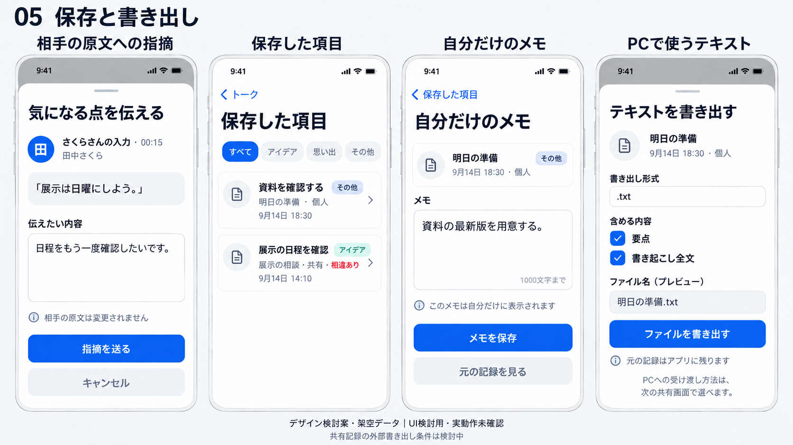
この画像の生成指示
Use case: ui-mockup. Produce a high fidelity original Japanese mobile app design comparison board, landscape 3840x2160 target, FOUR equal portrait screens side by side, each 390x844 proportions. Flat front views, minimal thin rounded frames, no photorealistic device, no perspective. Big crisp legible Japanese glyphs; no tiny text. Use generous margins outside screens for the board title, four panel labels, and footer. The four screens should occupy almost all usable image height. This is a conversation recording / context AI app, NOT a human messaging app or productivity dashboard. STYLE consistently for entire series: elegant iOS-native, restrained Apple hierarchy/proximity and baseline-ui discipline, LINE-like people navigation, Slack-like aligned simple rows. White #FFFFFF main surfaces, very pale gray #F5F6F8 backing, dark navy-black #17202B text, ONE solid blue #245CDF primary accent. SF Pro-like system sans with excellent Japanese; body17pt equivalent, title28pt, section20, metadata14, touch zones48x48 equivalent. Medium regular body, bold only headings. Thin separators, modest rounded16 surfaces, ample breathing room, NO gradients, NO glow, NO huge color cards, NO dense dashboard, NO extraneous icons. Only main bottom tabbar background, recording controls panel, common recording strip may be subtle light iOS Glass. Headers/body/chat/composer/sheets/source lists and start-record CTA are fully OPAQUE. Secondary screens have native back header, no unnecessary bottom tabs. Root bottom tabs exactly "Home" and "トーク" with icon+label. No integration tab, no tasks or calendar tab. All data fictional. Every image must include outside screen footer EXACT "デザイン検討案・架空データ｜UI検討用・実動作未確認". No actual app success verification implied. Consistent fictional person "田中さくら"; shared record "展示の相談", 9月14日14:10, conflicting originals 自分 "展示は土曜にしよう。" and さくら "展示は日曜にしよう。" Never silently resolve conflict. Original input owner is not confirmed speaker. Current on-screen date 9月14日. Fictional personal "明日の準備" 9月14日18:30. No logos of a real product except named integration text. BOARD title "05 保存と書き出し"; panels "相手の原文への指摘", "保存した項目", "自分だけのメモ", "PCで使うテキスト". S1 opaque sheet "気になる点を伝える", owner "さくらさんの入力 · 00:15", quoted "展示は日曜にしよう。", label "伝えたい内容" input "日程をもう一度確認したいです。", help "相手の原文は変更されません". Primary "指摘を送る", secondary "キャンセル". No technical payload or treating draft as sent. S2 native backトーク title "保存した項目". Search "保存した内容を探す", two plain entries with source metadata: "資料を確認する" / "明日の準備 · 個人", and "展示の日程を確認" / "展示の相談 · 共有 · 相違あり". First has tag "仕事", secondtag "確認". No independent AIorToDo tab. Entries open original and optional memo. S3 nativeback保存した項目 title "自分だけのメモ". Source "明日の準備 · 個人", tag "仕事", multiline note "資料の最新版を用意する。". help "このメモは自分だけに表示されます". Solid "メモを保存", secondary "元の記録を見る". Do not promise permanent storage, do not send memo to AI automatically. S4 opaque sheet "テキストを書き出す", source "明日の準備 · 個人", format ".txt", includedcontents "要点" check and "書き起こし全文" check. Filepreview "明日の準備.txt". Main "ファイルを書き出す", note "元の記録はアプリに残ります". Subtext "PCへの受け渡し方法は、次の共有画面で選べます". No actual PC synchronization or success. Footercaption belowboard include "共有記録の外部書き出し条件は検討中". Use clean FLAT opaque fills. Only specified bottom tabs/record controls may be glass. Reference supplies visual style, NOT screen content. 最終修正指示: Edit this board preserving 4screens and other copy. S1 report textarea REMOVE counter14/500 entirely; help can say "1000文字まで" instead. S2 saveditems REMOVE search input. Replace with short section "保存した項目" and allowed tagfilters "すべて / アイデア / 思い出 / その他". Change firstentrytag仕事 to "その他", second確認tag to "アイデア"; keep 相違あり as qualitystatus. Do NOT implement fulltextsearch. S3 memotag仕事→その他, REMOVE11/500 counter entirely, optional "1000文字まで". Leave private memo copy. S4 format txt is a fixed value, no dropdownchevron suggestingotherformats. Everythingelse same, all fictional, preservefooter.
06 一緒にまとめる
コード表示／コード入力／相手と範囲の確認／共有許可
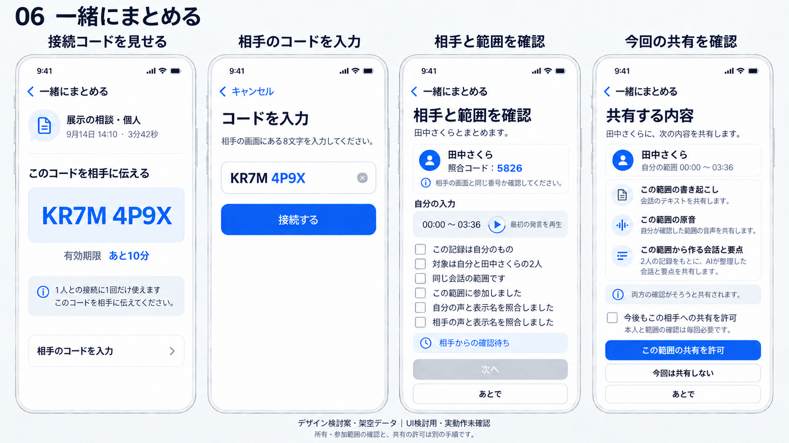
この画像の生成指示
Use case: ui-mockup. Produce a high fidelity original Japanese mobile app design comparison board, landscape 3840x2160 target, FOUR equal portrait screens side by side, each 390x844 proportions. Flat front views, minimal thin rounded frames, no photorealistic device, no perspective. Big crisp legible Japanese glyphs; no tiny text. Use generous margins outside screens for the board title, four panel labels, and footer. The four screens should occupy almost all usable image height. This is a conversation recording / context AI app, NOT a human messaging app or productivity dashboard. STYLE consistently for entire series: elegant iOS-native, restrained Apple hierarchy/proximity and baseline-ui discipline, LINE-like people navigation, Slack-like aligned simple rows. White #FFFFFF main surfaces, very pale gray #F5F6F8 backing, dark navy-black #17202B text, ONE solid blue #245CDF primary accent. SF Pro-like system sans with excellent Japanese; body17pt equivalent, title28pt, section20, metadata14, touch zones48x48 equivalent. Medium regular body, bold only headings. Thin separators, modest rounded16 surfaces, ample breathing room, NO gradients, NO glow, NO huge color cards, NO dense dashboard, NO extraneous icons. Only main bottom tabbar background, recording controls panel, common recording strip may be subtle light iOS Glass. Headers/body/chat/composer/sheets/source lists and start-record CTA are fully OPAQUE. Secondary screens have native back header, no unnecessary bottom tabs. Root bottom tabs exactly "Home" and "トーク" with icon+label. No integration tab, no tasks or calendar tab. All data fictional. Every image must include outside screen footer EXACT "デザイン検討案・架空データ｜UI検討用・実動作未確認". No actual app success verification implied. Consistent fictional person "田中さくら"; shared record "展示の相談", 9月14日14:10, conflicting originals 自分 "展示は土曜にしよう。" and さくら "展示は日曜にしよう。" Never silently resolve conflict. Original input owner is not confirmed speaker. Current on-screen date 9月14日. Fictional personal "明日の準備" 9月14日18:30. No logos of a real product except named integration text. BOARD title "06 一緒にまとめる"; panels "接続コードを見せる", "相手のコードを入力", "本人と範囲を確認", "今回の共有を確認". S1 U04 personal recordback title "一緒にまとめる", record "展示の相談 · 個人", section "このコードを相手に伝える", large 8 characters EXACT "KR7M 4P9X", "有効期限 あと10分", help "1人との接続に1回だけ使えます", secondary "相手のコードを入力". No QR. S2 U04 title "コードを入力", help "相手の画面にある8文字を入力", field same "KR7M 4P9X", keyboardnotneeded, primary "接続する", back "キャンセル". No successcheck. S3 U05 title "記録を確認", contextual "田中さくらとまとめます". Currentuserownrecord "自分の入力", range "00:00〜03:42". Three UNCHECKED rows "この記録は自分のものです", "この会話に参加しました", "参加した範囲を確認しました". Quiet spancontrol from00:00to03:42. Main "次へ" shown disabled beforechecks. No confirmation that recognitionguessedidentity. S4 U05 final "共有する内容", partner田中さくら. Bullets "書き起こし", "確認した範囲の原音", "統合した会話と要点". Notice "両方の確認がそろうと共有されます". Checkbox UNCHECKED "次回から確認を省略する". Primaryblue "この内容で共有する", secondary "今回は共有しない". Body not packedwithcontract jargon, no sharing untilbothapprove. Outsidefooter "所有・参加範囲の確認と、共有の許可は別の手順". Use clean FLAT opaque fills. Only specified bottom tabs/record controls may be glass. Reference supplies visual style, NOT screen content. 最終修正指示: Edit whole board for spec correctness. Keep4panelspositions and typography. S1 andS3 duration "9分32秒" MUST be "3分42秒", maxrecord5mins. S1/S2 pairingcode stays KR7M 4P9X10minutes. S3 redesign compactlayout title "相手と範囲を確認", partner "田中さくら", comparisoncode "照合コード：5826" with help "相手の画面と同じ番号か確認". Ownrecord group "自分の入力 · 00:00〜03:42", small playbutton "最初の発言を再生". Six clearly unchecked lines, bodyreadable: "この記録は自分のもの", "対象は自分と田中さくらの2人", "同じ会話の範囲です", "この範囲に参加しました", "自分の声と表示名を照合しました", "相手の声と表示名を照合しました". Small state "相手からの確認待ち". Primary "次へ" disabled, secondary "あとで". Only user's originalinputdisplay, do NOT reveal other's transcript before permission. S4 final title "共有する内容", partner "田中さくら", range clearly "自分の範囲 00:00〜03:42". Three concise entries "この範囲の書き起こし", "この範囲の原音", "この範囲から作る会話と要点". Small "両方の確認がそろうと共有されます". UNCHECKED option "今後もこの相手への共有を許可", help "本人と範囲の確認は毎回必要です". Primary EXACT "この範囲の共有を許可", secondary "今回は共有しない", text "あとで". No approval before allchecks. Footer preserved. No added features or infer partneridentity. 追加の範囲整合レビュー修正: Edit only the SELECTED SHARING TIME RANGE in this board. Preserve recording total duration "3分42秒" in firstpanel. In thirdpanel's owninput selection row change "00:00〜03:42" to EXACT "00:00〜03:36". In fourthpanel's finalconfirmation range change to EXACT "自分の範囲 00:00〜03:36". The own file total length is03:42 but bothpeopleparticipated only through03:36, so sharingtrim ends03:36. Do not alter code,checklist,buttonsorpermission scopes. Keepallothertextandfooter.
07 共有の待機と失効
相手待ち／確認期限切れ／範囲の再確認／利用不可
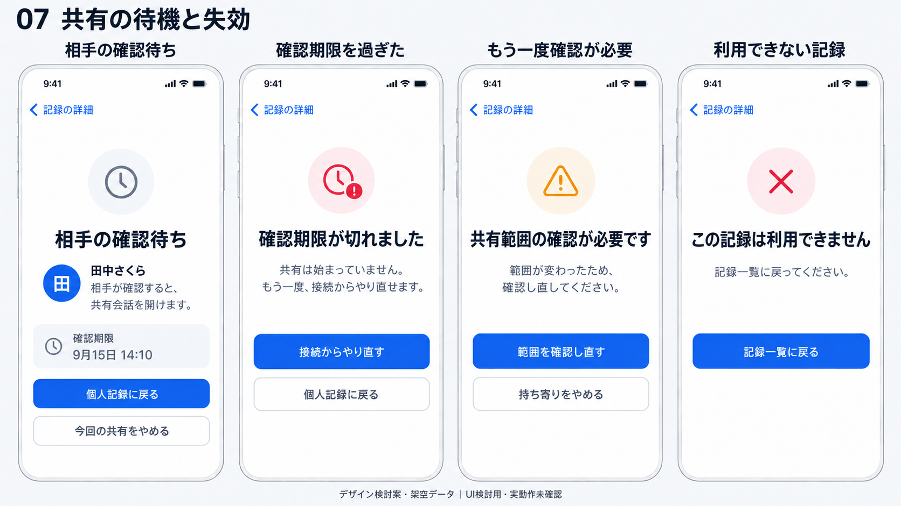
この画像の生成指示
Use case: ui-mockup. Produce a high fidelity original Japanese mobile app design comparison board, landscape 3840x2160 target, FOUR equal portrait screens side by side, each 390x844 proportions. Flat front views, minimal thin rounded frames, no photorealistic device, no perspective. Big crisp legible Japanese glyphs; no tiny text. Use generous margins outside screens for the board title, four panel labels, and footer. The four screens should occupy almost all usable image height. This is a conversation recording / context AI app, NOT a human messaging app or productivity dashboard. STYLE consistently for entire series: elegant iOS-native, restrained Apple hierarchy/proximity and baseline-ui discipline, LINE-like people navigation, Slack-like aligned simple rows. White #FFFFFF main surfaces, very pale gray #F5F6F8 backing, dark navy-black #17202B text, ONE solid blue #245CDF primary accent. SF Pro-like system sans with excellent Japanese; body17pt equivalent, title28pt, section20, metadata14, touch zones48x48 equivalent. Medium regular body, bold only headings. Thin separators, modest rounded16 surfaces, ample breathing room, NO gradients, NO glow, NO huge color cards, NO dense dashboard, NO extraneous icons. Only main bottom tabbar background, recording controls panel, common recording strip may be subtle light iOS Glass. Headers/body/chat/composer/sheets/source lists and start-record CTA are fully OPAQUE. Secondary screens have native back header, no unnecessary bottom tabs. Root bottom tabs exactly "Home" and "トーク" with icon+label. No integration tab, no tasks or calendar tab. All data fictional. Every image must include outside screen footer EXACT "デザイン検討案・架空データ｜UI検討用・実動作未確認". No actual app success verification implied. Consistent fictional person "田中さくら"; shared record "展示の相談", 9月14日14:10, conflicting originals 自分 "展示は土曜にしよう。" and さくら "展示は日曜にしよう。" Never silently resolve conflict. Original input owner is not confirmed speaker. Current on-screen date 9月14日. Fictional personal "明日の準備" 9月14日18:30. No logos of a real product except named integration text. BOARD title "07 共有の待機と失効"; panels "相手の確認待ち", "確認期限を過ぎた", "もう一度確認が必要", "共有が取り消された". S1 U05 nativeback個人記録, title "相手の確認待ち", partner "田中さくら", copy "相手が確認すると、共有会話を開けます". Deadline "確認期限 9月15日 14:10". Primary "個人記録に戻る", secondary "今回の共有をやめる". No shared transcript visible. Simpleclockicon. S2 title "確認期限が切れました", copy "共有は始まっていません。もう一度、接続からやり直せます。". Primary "接続からやり直す", secondary "個人記録に戻る". No shared success. S3 established U06 route now noallowedbody, neutral heading "共有を再確認", copy "共有内容を表示する前に、もう一度確認が必要です。". Primary "共有内容を確認する", secondary "記録一覧に戻る". DO NOT display old title, original, summary or audio orAIderivedsnippets. No access assumption. S4 U06 revoked, neutral heading "共有が取り消されました", copy "この共有会話は表示できません。". Primary "記録一覧に戻る". Subtle secondary "自分の記録を見る". No privateother content or retainedshared snippet orsuccessbadge. Do not imply own data were deleted. Use clean FLAT opaque fills. Only specified bottom tabs/record controls may be glass. Reference supplies visual style, NOT screen content. 最終修正指示: Edit this 4screen board, preservelayoutstylefooter. S3 needs_confirmation replace title "共有を再確認" with EXACT "共有範囲の確認が必要です", body "範囲が変わったため、確認し直してください。", primary "範囲を確認し直す", secondary "持ち寄りをやめる". No old body/title. S4 generic unavailable: outsidepanel heading "利用できない記録", inside main heading EXACT "この記録は利用できません". Remove "共有が取り消されました" entirely. Explain neither cancellationnorownershipnor existence. Body "記録一覧に戻ってください。", primary "記録一覧に戻る", remove selfrecordbutton to avoid implyingknowledge. S1/2 unchanged.
08 AIトークの状態
出典の参照／参照なし／生成中／失敗
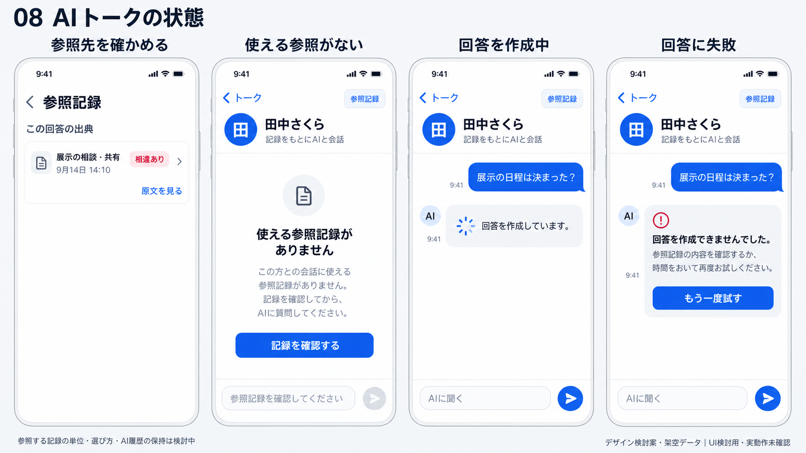
この画像の生成指示
Use case: ui-mockup. Produce a high fidelity original Japanese mobile app design comparison board, landscape 3840x2160 target, FOUR equal portrait screens side by side, each 390x844 proportions. Flat front views, minimal thin rounded frames, no photorealistic device, no perspective. Big crisp legible Japanese glyphs; no tiny text. Use generous margins outside screens for the board title, four panel labels, and footer. The four screens should occupy almost all usable image height. This is a conversation recording / context AI app, NOT a human messaging app or productivity dashboard. STYLE consistently for entire series: elegant iOS-native, restrained Apple hierarchy/proximity and baseline-ui discipline, LINE-like people navigation, Slack-like aligned simple rows. White #FFFFFF main surfaces, very pale gray #F5F6F8 backing, dark navy-black #17202B text, ONE solid blue #245CDF primary accent. SF Pro-like system sans with excellent Japanese; body17pt equivalent, title28pt, section20, metadata14, touch zones48x48 equivalent. Medium regular body, bold only headings. Thin separators, modest rounded16 surfaces, ample breathing room, NO gradients, NO glow, NO huge color cards, NO dense dashboard, NO extraneous icons. Only main bottom tabbar background, recording controls panel, common recording strip may be subtle light iOS Glass. Headers/body/chat/composer/sheets/source lists and start-record CTA are fully OPAQUE. Secondary screens have native back header, no unnecessary bottom tabs. Root bottom tabs exactly "Home" and "トーク" with icon+label. No integration tab, no tasks or calendar tab. All data fictional. Every image must include outside screen footer EXACT "デザイン検討案・架空データ｜UI検討用・実動作未確認". No actual app success verification implied. Consistent fictional person "田中さくら"; shared record "展示の相談", 9月14日14:10, conflicting originals 自分 "展示は土曜にしよう。" and さくら "展示は日曜にしよう。" Never silently resolve conflict. Original input owner is not confirmed speaker. Current on-screen date 9月14日. Fictional personal "明日の準備" 9月14日18:30. No logos of a real product except named integration text. BOARD title "08 AIトークの状態"; panels "参照先を確かめる", "使える参照がない", "回答を作成中", "回答に失敗". S1 opaque tall sheet "参照記録", one illustrative row "展示の相談 · 共有", status "相違あり", link "原文を見る". Header underlabel "この回答の出典". Do not invent automatic all-record selection or add checkbox for reference scope. Outsideboardnote "参照する記録の単位・選び方・AI履歴の保持は検討中". S2 personAIroom header田中さくら, subtitle "記録をもとにAIと会話". Empty body smallsourceicon "使える参照記録がありません". One blue nextaction "記録を確認する". Bottom composer disabledgray "参照記録を確認してください". No invented invitationorinitialDM. S3 sameAIheader, button参照記録, user "展示の日程は決まった？", AI label and calm spinner "回答を作成しています". No percentages or guessed remainingtime. Opaque composer. S4 sameAIheader and sameuserquestion, localerror "回答を作成できませんでした", button "もう一度試す", originalquestion remains. No fakeAIanswer or expired original. Single blueaccent. Flat uniform buttons, not glossy. Reference image is for visual design only. No invented 500-character limits/counters. Four equal screens.
09 外部への依頼もトーク内で
Notion作成確認／Drive成功表示例／予定登録確認／結果不明
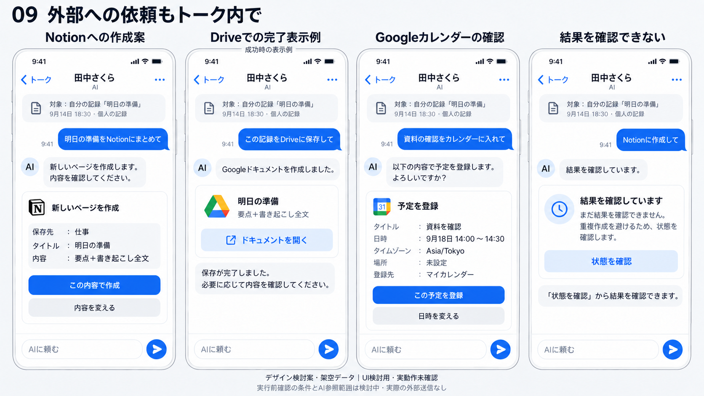
この画像の生成指示
Use case: ui-mockup. Produce a high fidelity original Japanese mobile app design comparison board, landscape 3840x2160 target, FOUR equal portrait screens side by side, each 390x844 proportions. Flat front views, minimal thin rounded frames, no photorealistic device, no perspective. Big crisp legible Japanese glyphs; no tiny text. Use generous margins outside screens for the board title, four panel labels, and footer. The four screens should occupy almost all usable image height. This is a conversation recording / context AI app, NOT a human messaging app or productivity dashboard. STYLE consistently for entire series: elegant iOS-native, restrained Apple hierarchy/proximity and baseline-ui discipline, LINE-like people navigation, Slack-like aligned simple rows. White #FFFFFF main surfaces, very pale gray #F5F6F8 backing, dark navy-black #17202B text, ONE solid blue #245CDF primary accent. SF Pro-like system sans with excellent Japanese; body17pt equivalent, title28pt, section20, metadata14, touch zones48x48 equivalent. Medium regular body, bold only headings. Thin separators, modest rounded16 surfaces, ample breathing room, NO gradients, NO glow, NO huge color cards, NO dense dashboard, NO extraneous icons. Only main bottom tabbar background, recording controls panel, common recording strip may be subtle light iOS Glass. Headers/body/chat/composer/sheets/source lists and start-record CTA are fully OPAQUE. Secondary screens have native back header, no unnecessary bottom tabs. Root bottom tabs exactly "Home" and "トーク" with icon+label. No integration tab, no tasks or calendar tab. All data fictional. Every image must include outside screen footer EXACT "デザイン検討案・架空データ｜UI検討用・実動作未確認". No actual app success verification implied. Consistent fictional person "田中さくら"; shared record "展示の相談", 9月14日14:10, conflicting originals 自分 "展示は土曜にしよう。" and さくら "展示は日曜にしよう。" Never silently resolve conflict. Original input owner is not confirmed speaker. Current on-screen date 9月14日. Fictional personal "明日の準備" 9月14日18:30. No logos of a real product except named integration text. BOARD title "09 外部への依頼もトーク内で"; panels "Notionへの作成案", "Driveでの完了表示例", "Googleカレンダーの確認", "結果を確認できない". ALL4 SCREENS are AI chat, with backトーク, header "田中さくら" and "AI", opaque composer "AIに頼む", sourcecontext small "対象：自分の記録「明日の準備」". Not actualhumanDM. Only fictional ownrecord export, neverotherpersonaldata. Exampleoperations clearly illustrative. S1 userbubble "明日の準備をNotionにまとめて". AI action card header "新しいページを作成", rows "保存先：仕事", "タイトル：明日の準備", "内容：要点＋書き起こし全文". Primary "この内容で作成", secondary "内容を変える". No automaticexistingpageediting. S2 user "この記録をDriveに保存して". AI label response "Googleドキュメントを作成しました". Compact resultcard "明日の準備" / "要点＋書き起こし全文", linkbutton "ドキュメントを開く". No invented URL. Small panel label outside exact "成功時の表示例". This is a fictional simulatedvisual only. S3 user "資料の確認をカレンダーに入れて". AI card title "予定を登録", fields "資料を確認", "9月18日 14:00〜14:30", "Asia/Tokyo", "場所：未設定", "登録先：マイカレンダー". Primary "この予定を登録", secondary "日時を変える". NO transcript attachment / guestinvite / automationtoggle. S4 user "Notionに作成して", AI action statuscard "結果を確認しています", body "まだ結果を確認できません。重複作成を避けるため、状態を確認します。", action "状態を確認". No retrycreatebutton, no falsefailure/success. Outsidefooter secondline "実行前確認の条件とAI参照範囲は検討中・実際の外部送信なし". Flat uniform buttons, not glossy. Reference image is for visual design only. No invented 500-character limits/counters. Four equal screens. 最終修正指示: Edit only rightmost screen bottom AI message. Replace "確認が完了し次第、お知らせします。" with EXACT "「状態を確認」から結果を確認できます。". No notification or backgroundmonitor promise. In second panel outside label add small "成功時の表示例". Everythingelseincludingpersonalrecord scope, calendarfields,notionfulltextandfooter stayssame. Flat uniform colors.
10 設定と共有管理
接続サービス／アクションボタン／共有管理／保持期間
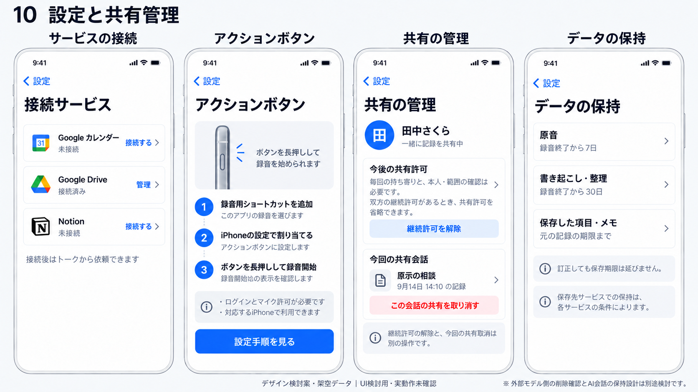
この画像の生成指示
Use case: ui-mockup. Produce a high fidelity original Japanese mobile app design comparison board, landscape 3840x2160 target, FOUR equal portrait screens side by side, each 390x844 proportions. Flat front views, minimal thin rounded frames, no photorealistic device, no perspective. Big crisp legible Japanese glyphs; no tiny text. Use generous margins outside screens for the board title, four panel labels, and footer. The four screens should occupy almost all usable image height. This is a conversation recording / context AI app, NOT a human messaging app or productivity dashboard. STYLE consistently for entire series: elegant iOS-native, restrained Apple hierarchy/proximity and baseline-ui discipline, LINE-like people navigation, Slack-like aligned simple rows. White #FFFFFF main surfaces, very pale gray #F5F6F8 backing, dark navy-black #17202B text, ONE solid blue #245CDF primary accent. SF Pro-like system sans with excellent Japanese; body17pt equivalent, title28pt, section20, metadata14, touch zones48x48 equivalent. Medium regular body, bold only headings. Thin separators, modest rounded16 surfaces, ample breathing room, NO gradients, NO glow, NO huge color cards, NO dense dashboard, NO extraneous icons. Only main bottom tabbar background, recording controls panel, common recording strip may be subtle light iOS Glass. Headers/body/chat/composer/sheets/source lists and start-record CTA are fully OPAQUE. Secondary screens have native back header, no unnecessary bottom tabs. Root bottom tabs exactly "Home" and "トーク" with icon+label. No integration tab, no tasks or calendar tab. All data fictional. Every image must include outside screen footer EXACT "デザイン検討案・架空データ｜UI検討用・実動作未確認". No actual app success verification implied. Consistent fictional person "田中さくら"; shared record "展示の相談", 9月14日14:10, conflicting originals 自分 "展示は土曜にしよう。" and さくら "展示は日曜にしよう。" Never silently resolve conflict. Original input owner is not confirmed speaker. Current on-screen date 9月14日. Fictional personal "明日の準備" 9月14日18:30. No logos of a real product except named integration text. BOARD title "10 設定と共有管理"; panels "サービスの接続", "アクションボタン", "共有の管理", "データの保持". S1 nativeback設定 title "接続サービス". Three plainrows "Google カレンダー / 未接続 / 接続する", "Google Drive / 接続済み / 管理", "Notion / 未接続 / 接続する". Help "接続後はトークから依頼できます". No integrationsmainbottomtab. Allstatesfictional. No invented scopes. S2 title "アクションボタン", smallsimpleiPhonesideicon. Three short steps: "1 録音用ショートカットを追加", "2 iPhoneの設定で割り当てる", "3 ボタンを長押しして録音開始". Notes "ログインとマイク許可が必要です" and "対応するiPhoneで利用できます". Button "設定手順を見る". No appclaimOSassignmentcomplete, no shortclicktogglepromise. S3 title "共有の管理", section "田中さくら". Two differentopaqueareas: "今後の自動共有" / "継続許可を解除"; "今回の共有会話" / "展示の相談" / "この会話の共有を取り消す". Short "継続許可の解除と、今回の共有取消は別の操作です". Cleardangerred ONLYdestructive action and otherwiseblueaccent. S4 title "データの保持". Simplethreegroups "原音" / "録音終了から7日"; "書き起こし・整理" / "録音終了から30日"; "保存した項目・メモ" / "元の記録の期限まで". Help "訂正しても保存期限は延びません". Smaller "保存先サービスでの保持は、各サービスの条件によります". Outsideboardcaption "外部モデル側の削除確認とAI会話の保持設計は別途検討". Flat uniform buttons, not glossy. Reference image is for visual design only. No invented 500-character limits/counters. Four equal screens. 最終修正指示: Edit4screen board preserving allcontrols. S2 actionbutton step3 subtext replace "録音が始まり、AIが会話を整理します" with "録音開始の表示を確認します". This guide onlyrecording,noimmediateAIprocessing. S3 heading "今後の自動共有" -> "今後の共有許可". Replace its 2subsentences by exact "毎回の持ち寄りと、本人・範囲の確認は必要です。" and "双方の継続許可があるとき、共有許可を省略できます。". Do notsayallfutureautomaticorAIcanread. S4 remove IN-APP paragraph "外部モデル側の削除確認とAI会話の保持設計は別途検討です". Instead place that only OUTSIDEscreen below board as a designnote. Keep7day/30day/sourceexpiry andothercontrols. No additionalinventedtext.
11 初回利用と共通状態
初回Home／マイク拒否／読込／原音期限切れ
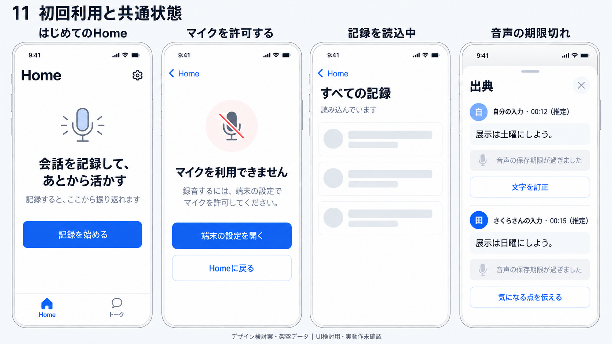
この画像の生成指示
Use case: ui-mockup. Produce a high fidelity original Japanese mobile app design comparison board, landscape 3840x2160 target, FOUR equal portrait screens side by side, each 390x844 proportions. Flat front views, minimal thin rounded frames, no photorealistic device, no perspective. Big crisp legible Japanese glyphs; no tiny text. Use generous margins outside screens for the board title, four panel labels, and footer. The four screens should occupy almost all usable image height. This is a conversation recording / context AI app, NOT a human messaging app or productivity dashboard. STYLE consistently for entire series: elegant iOS-native, restrained Apple hierarchy/proximity and baseline-ui discipline, LINE-like people navigation, Slack-like aligned simple rows. White #FFFFFF main surfaces, very pale gray #F5F6F8 backing, dark navy-black #17202B text, ONE solid blue #245CDF primary accent. SF Pro-like system sans with excellent Japanese; body17pt equivalent, title28pt, section20, metadata14, touch zones48x48 equivalent. Medium regular body, bold only headings. Thin separators, modest rounded16 surfaces, ample breathing room, NO gradients, NO glow, NO huge color cards, NO dense dashboard, NO extraneous icons. Only main bottom tabbar background, recording controls panel, common recording strip may be subtle light iOS Glass. Headers/body/chat/composer/sheets/source lists and start-record CTA are fully OPAQUE. Secondary screens have native back header, no unnecessary bottom tabs. Root bottom tabs exactly "Home" and "トーク" with icon+label. No integration tab, no tasks or calendar tab. All data fictional. Every image must include outside screen footer EXACT "デザイン検討案・架空データ｜UI検討用・実動作未確認". No actual app success verification implied. Consistent fictional person "田中さくら"; shared record "展示の相談", 9月14日14:10, conflicting originals 自分 "展示は土曜にしよう。" and さくら "展示は日曜にしよう。" Never silently resolve conflict. Original input owner is not confirmed speaker. Current on-screen date 9月14日. Fictional personal "明日の準備" 9月14日18:30. No logos of a real product except named integration text. BOARD title "11 初回利用と共通状態"; panels "はじめてのHome", "マイクを許可する", "記録を読込中", "音声の期限切れ". S1 Home root status9:41 headingHome settingsgear, quiet illustration flatoutline microphone small. Title "会話を記録して、あとから活かす", body "記録すると、ここから振り返れます". Oneopaque blue "記録を始める". Bottom Home/トーク. NOduplicateprimaryCTA no statistics nofakecontent. S2 afterOSdenial app screen nativebackHome title "マイクを利用できません", body "録音するには、端末の設定でマイクを許可してください。". Oneblue "端末の設定を開く", secondary "Homeに戻る". This is app recovery, NOT actual OS permissions dialog, no processing-consent checkbox, no fictionalpermissiongranted. S3 nativebackHome title "すべての記録", caption "読み込んでいます", 3 structural neutralgray skeleton rows with avatar/line placeholders, noreal titlesordates. Backstillavailable. Nosuccessoremptymessage. S4 U07 opaque tallsheet title "出典", selfsource "自分の入力 · 00:12", text "展示は土曜にしよう。". Playback replaced by graydisabled "音声の保存期限が過ぎました". Ownbutton "文字を訂正". Separator other "さくらさんの入力 · 00:15", text "展示は日曜にしよう。", graydisabled sameexpiry, "気になる点を伝える". Bothvalidtextkept. Noactiveplayicons. Use reference for visual style only. No added feature/explanatory sentences outside exact specified text. Four readable screens. 最終修正指示: Edit only RIGHTMOST source screen. Change source position labels to "00:12（推定）" and "00:15（推定）". Preserve bothoriginals, expiredaudiounplayable andownedcorrection/otherreport. Nootherchanges.
12 指摘への対応と中断
届いた指摘／対応判断／中断後の保存／文字期限切れ
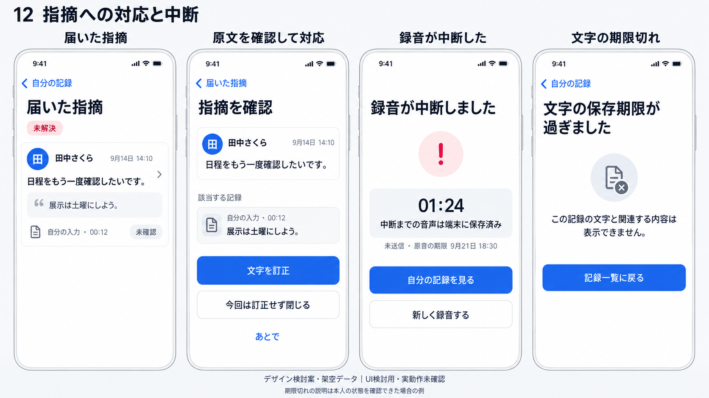
この画像の生成指示
Use case: ui-mockup. Produce a high fidelity original Japanese mobile app design comparison board, landscape 3840x2160 target, FOUR equal portrait screens side by side, each 390x844 proportions. Flat front views, minimal thin rounded frames, no photorealistic device, no perspective. Big crisp legible Japanese glyphs; no tiny text. Use generous margins outside screens for the board title, four panel labels, and footer. The four screens should occupy almost all usable image height. This is a conversation recording / context AI app, NOT a human messaging app or productivity dashboard. STYLE consistently for entire series: elegant iOS-native, restrained Apple hierarchy/proximity and baseline-ui discipline, LINE-like people navigation, Slack-like aligned simple rows. White #FFFFFF main surfaces, very pale gray #F5F6F8 backing, dark navy-black #17202B text, ONE solid blue #245CDF primary accent. SF Pro-like system sans with excellent Japanese; body17pt equivalent, title28pt, section20, metadata14, touch zones48x48 equivalent. Medium regular body, bold only headings. Thin separators, modest rounded16 surfaces, ample breathing room, NO gradients, NO glow, NO huge color cards, NO dense dashboard, NO extraneous icons. Only main bottom tabbar background, recording controls panel, common recording strip may be subtle light iOS Glass. Headers/body/chat/composer/sheets/source lists and start-record CTA are fully OPAQUE. Secondary screens have native back header, no unnecessary bottom tabs. Root bottom tabs exactly "Home" and "トーク" with icon+label. No integration tab, no tasks or calendar tab. All data fictional. Every image must include outside screen footer EXACT "デザイン検討案・架空データ｜UI検討用・実動作未確認". No actual app success verification implied. Consistent fictional person "田中さくら"; shared record "展示の相談", 9月14日14:10, conflicting originals 自分 "展示は土曜にしよう。" and さくら "展示は日曜にしよう。" Never silently resolve conflict. Original input owner is not confirmed speaker. Current on-screen date 9月14日. Fictional personal "明日の準備" 9月14日18:30. No logos of a real product except named integration text. BOARD title "12 指摘への対応と中断"; panels "届いた指摘", "原文を確認して対応", "録音が中断した", "文字の期限切れ". S1 nativeback自分の記録 title "届いた指摘", sublabel "未解決", one row fromさくら "日程をもう一度確認したいです。", quote target "展示は土曜にしよう。", source "自分の入力 · 00:12", status "未確認". No checkmarkresolvedfromview. S2 title "指摘を確認", sender "田中さくら", message "日程をもう一度確認したいです。". Separate originalgroup "自分の入力 · 00:12" / "展示は土曜にしよう。". Primary "文字を訂正", secondary "今回は訂正せず閉じる", tertiary "あとで". No automatically changingwordto日曜, noresolutionclaim. S3 recordinginterruption title "録音が中断しました", elapsed "01:24", savedstate "中断までの音声は端末に保存済み", smaller "未送信 · 原音の期限 9月21日18:30". Primary "自分の記録を見る", secondary "新しく録音する". Noauto restart, nopause/resume. Newrecordingexplicit. S4 owntext410confirmed title "文字の保存期限が過ぎました", body "この記録の文字と関連する内容は表示できません。". One "記録一覧に戻る". No expired title/snippet/summary. Noactiveaudio sinceaudioexpired too. Outsidefooter "期限切れの説明は本人の状態を確認できた場合の例". Use reference for visual style only. No added feature/explanatory sentences outside exact specified text. Four readable screens.
13 Androidの通常表示
Home／AIトーク／不透明な出典／録音中
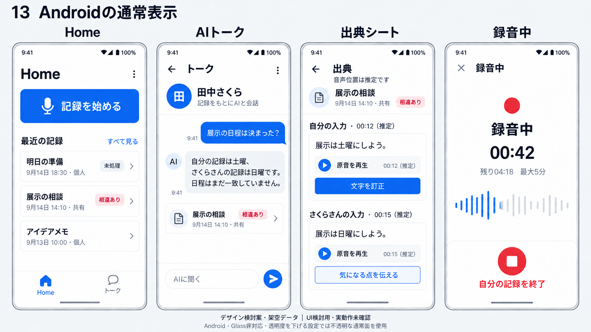
この画像の生成指示
Use case: ui-mockup. Produce a high fidelity original Japanese mobile app design comparison board, landscape 3840x2160 target, FOUR equal portrait screens side by side, each 390x844 proportions. Flat front views, minimal thin rounded frames, no photorealistic device, no perspective. Big crisp legible Japanese glyphs; no tiny text. Use generous margins outside screens for the board title, four panel labels, and footer. The four screens should occupy almost all usable image height. This is a conversation recording / context AI app, NOT a human messaging app or productivity dashboard. STYLE consistently for entire series: elegant iOS-native, restrained Apple hierarchy/proximity and baseline-ui discipline, LINE-like people navigation, Slack-like aligned simple rows. White #FFFFFF main surfaces, very pale gray #F5F6F8 backing, dark navy-black #17202B text, ONE solid blue #245CDF primary accent. SF Pro-like system sans with excellent Japanese; body17pt equivalent, title28pt, section20, metadata14, touch zones48x48 equivalent. Medium regular body, bold only headings. Thin separators, modest rounded16 surfaces, ample breathing room, NO gradients, NO glow, NO huge color cards, NO dense dashboard, NO extraneous icons. Only main bottom tabbar background, recording controls panel, common recording strip may be subtle light iOS Glass. Headers/body/chat/composer/sheets/source lists and start-record CTA are fully OPAQUE. Secondary screens have native back header, no unnecessary bottom tabs. Root bottom tabs exactly "Home" and "トーク" with icon+label. No integration tab, no tasks or calendar tab. All data fictional. Every image must include outside screen footer EXACT "デザイン検討案・架空データ｜UI検討用・実動作未確認". No actual app success verification implied. Consistent fictional person "田中さくら"; shared record "展示の相談", 9月14日14:10, conflicting originals 自分 "展示は土曜にしよう。" and さくら "展示は日曜にしよう。" Never silently resolve conflict. Original input owner is not confirmed speaker. Current on-screen date 9月14日. Fictional personal "明日の準備" 9月14日18:30. No logos of a real product except named integration text. BOARD title "13 Androidの通常表示"; panels "Home", "AIトーク", "出典シート", "録音中". Android-only system statusbar and native gesturebar, medium Material-native roundedcorners, systemJapanese font, same hierarchyasotherboards. EVERYTHING opaque light, NOGlass/blur/translucency, NOT pretend iOSstyleheavy glass. Singleflatblueprimary, nogradient. S1 Home sameas01 withblueopaque記録を始める and3recentrows, Home/トーク bottom exactly; common RECORDING BAR notshown becauseidle. S2 AIchat田中さくら subtitle"記録をもとにAIと会話", user"展示の日程は決まった？", AI "自分の記録は土曜、さくらさんの記録は日曜です。日程はまだ一致していません。", sourcepill展示の相談·共有·相違あり. Composeropaque. S3 tall opaque sourcesheet "出典", own "自分の入力 · 00:12"/"展示は土曜にしよう。"/"原音を再生"/blue"文字を訂正"; other "さくらさんの入力 · 00:15"/"展示は日曜にしよう。"/"原音を再生"/"気になる点を伝える". Bothvisible. NoGlass. S4 recordingcenter red dot + "録音中", elapsed"00:42", "残り04:18", "最大5分", simple restrainedwaveform, loweropaquecontrol whitepanelwithredstopbutton and exact "自分の記録を終了". No pauseormergedrecording. Outsidefooternote "Android・Glass非対応・透明度を下げる設定では不透明な通常面を使用". Use reference for visual style only. No added feature/explanatory sentences outside exact specified text. Four readable screens. 最終修正指示: Edit only THIRD Android source screen. Every 00:12 and00:15 shown as playback/sourceposition must be clearly estimated: "00:12（推定）", "00:15（推定）", or compactsharedcaption "音声位置は推定です" immediatelyunder出典header. Keep Androidopaqueareas, bothoriginals/actions. Nootherchanges.
14 アカウントと補助画面
ログイン入口／ログアウト確認／絞り込み／あとで見る
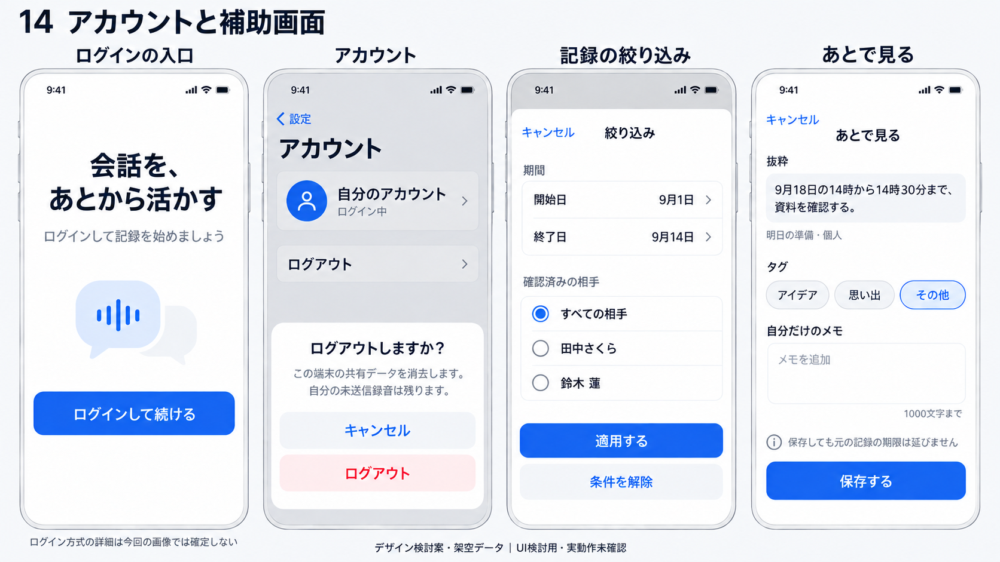
この画像の生成指示
Use case: ui-mockup. Produce a high fidelity original Japanese mobile app design comparison board, landscape 3840x2160 target, FOUR equal portrait screens side by side, each 390x844 proportions. Flat front views, minimal thin rounded frames, no photorealistic device, no perspective. Big crisp legible Japanese glyphs; no tiny text. Use generous margins outside screens for the board title, four panel labels, and footer. The four screens should occupy almost all usable image height. This is a conversation recording / context AI app, NOT a human messaging app or productivity dashboard. STYLE consistently for entire series: elegant iOS-native, restrained Apple hierarchy/proximity and baseline-ui discipline, LINE-like people navigation, Slack-like aligned simple rows. White #FFFFFF main surfaces, very pale gray #F5F6F8 backing, dark navy-black #17202B text, ONE solid blue #245CDF primary accent. SF Pro-like system sans with excellent Japanese; body17pt equivalent, title28pt, section20, metadata14, touch zones48x48 equivalent. Medium regular body, bold only headings. Thin separators, modest rounded16 surfaces, ample breathing room, NO gradients, NO glow, NO huge color cards, NO dense dashboard, NO extraneous icons. Only main bottom tabbar background, recording controls panel, common recording strip may be subtle light iOS Glass. Headers/body/chat/composer/sheets/source lists and start-record CTA are fully OPAQUE. Secondary screens have native back header, no unnecessary bottom tabs. Root bottom tabs exactly "Home" and "トーク" with icon+label. No integration tab, no tasks or calendar tab. All data fictional. Every image must include outside screen footer EXACT "デザイン検討案・架空データ｜UI検討用・実動作未確認". No actual app success verification implied. Consistent fictional person "田中さくら"; shared record "展示の相談", 9月14日14:10, conflicting originals 自分 "展示は土曜にしよう。" and さくら "展示は日曜にしよう。" Never silently resolve conflict. Original input owner is not confirmed speaker. Current on-screen date 9月14日. Fictional personal "明日の準備" 9月14日18:30. No logos of a real product except named integration text. BOARD title "14 アカウントと補助画面"; panels "ログインの入口", "アカウント", "記録の絞り込み", "あとで見る". S1 minimalwhite welcome heading "会話を、あとから活かす". Smalltext "ログインして記録を始めましょう". Single primary "ログインして続ける". No email/password/providerlogo/AIprocessingconsent. Outsidecaption "ログイン方式の詳細は今回の画像では確定しない". S2 nativeback設定 title "アカウント", simple state "ログイン中", one actionrow "ログアウト". Lower opaque confirmation dialog example title "ログアウトしますか？", text "この端末の共有データを消去します。自分の未送信録音は残ります。", cancel "キャンセル", redaction "ログアウト". No inventedaccountdeletefeature. S3 opaque tall filter sheet "絞り込み", datefields "開始日 9月1日", "終了日 9月14日", section "確認済みの相手", options "すべての相手" selected, "田中さくら" unchecked, "鈴木 蓮" unchecked. Primary "適用する", secondary "条件を解除". No fulltextsearch. Datepickerrollwheel optionalomit. S4 opaque save sheet "あとで見る", excerpt "9月18日の14時から14時30分まで、資料を確認する。", origin "明日の準備 · 個人". Optionaltagchips "アイデア / 思い出 / その他" その他 selected. Optionalmemo input "自分だけのメモ", textplaceholder "メモを追加", help "1000文字まで". Notice "保存しても元の記録の期限は延びません". Main "保存する", cancel. No automaticAIcopy. No extra feature text; retain exact specified wording. Root tabs only Home/トーク. Reference is style only. 最終修正指示: Edit only second screen account identity. It wrongly reuses partner田中さくら as currentuser. Replace name with "自分のアカウント" and monogram田 with simple neutralpersonoutline, keepログイン中. No actual name/email. Allother3screens andfooterunchanged. Flatfills.
15 進行中と再接続
共通録音帯／端末保存中／書き起こし失敗／接続して戻る
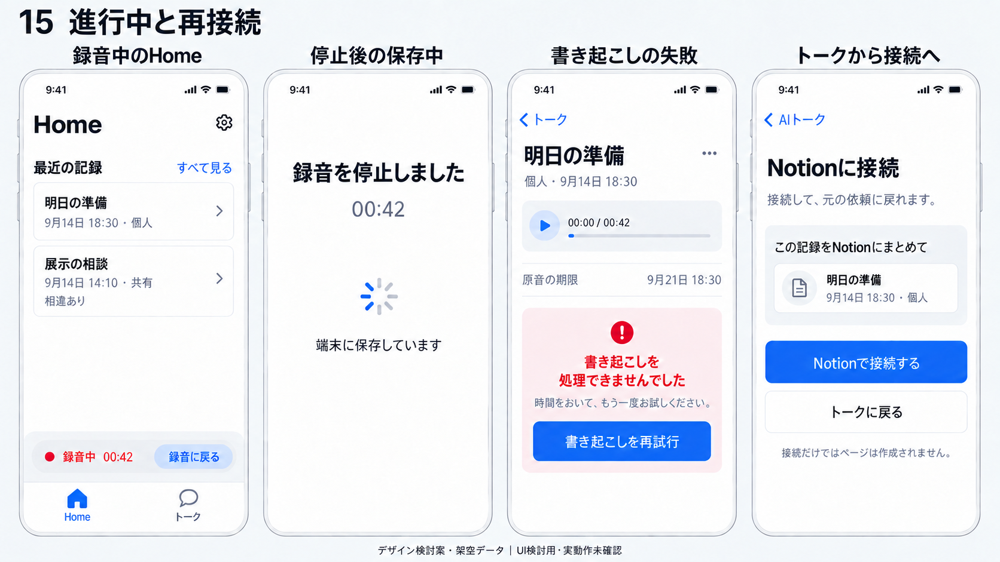
この画像の生成指示
Use case: ui-mockup. Produce a high fidelity original Japanese mobile app design comparison board, landscape 3840x2160 target, FOUR equal portrait screens side by side, each 390x844 proportions. Flat front views, minimal thin rounded frames, no photorealistic device, no perspective. Big crisp legible Japanese glyphs; no tiny text. Use generous margins outside screens for the board title, four panel labels, and footer. The four screens should occupy almost all usable image height. This is a conversation recording / context AI app, NOT a human messaging app or productivity dashboard. STYLE consistently for entire series: elegant iOS-native, restrained Apple hierarchy/proximity and baseline-ui discipline, LINE-like people navigation, Slack-like aligned simple rows. White #FFFFFF main surfaces, very pale gray #F5F6F8 backing, dark navy-black #17202B text, ONE solid blue #245CDF primary accent. SF Pro-like system sans with excellent Japanese; body17pt equivalent, title28pt, section20, metadata14, touch zones48x48 equivalent. Medium regular body, bold only headings. Thin separators, modest rounded16 surfaces, ample breathing room, NO gradients, NO glow, NO huge color cards, NO dense dashboard, NO extraneous icons. Only main bottom tabbar background, recording controls panel, common recording strip may be subtle light iOS Glass. Headers/body/chat/composer/sheets/source lists and start-record CTA are fully OPAQUE. Secondary screens have native back header, no unnecessary bottom tabs. Root bottom tabs exactly "Home" and "トーク" with icon+label. No integration tab, no tasks or calendar tab. All data fictional. Every image must include outside screen footer EXACT "デザイン検討案・架空データ｜UI検討用・実動作未確認". No actual app success verification implied. Consistent fictional person "田中さくら"; shared record "展示の相談", 9月14日14:10, conflicting originals 自分 "展示は土曜にしよう。" and さくら "展示は日曜にしよう。" Never silently resolve conflict. Original input owner is not confirmed speaker. Current on-screen date 9月14日. Fictional personal "明日の準備" 9月14日18:30. No logos of a real product except named integration text. BOARD title "15 進行中と再接続"; panels "録音中のHome", "停止後の保存中", "書き起こしの失敗", "トークから接続へ". S1 Home withsettingsgear, NO記録を始めるbuttonwhileactive. Smallcalm recentrows personalonly. Bottom2tabs Home/トーク. Directlyabovetabs narrowlightGlassrecordingstrip red dot + "録音中 00:42" + button "録音に戻る". Stripisclearlypartofrecordingnotnewtab. NeversecondrecordCTA. S2 U02 after stop, heading "録音を停止しました", duration "00:42", local spinner "端末に保存しています". No successcheckorSavedtextorprocessingCTA untilsaved. No newrecordstartwhileinflight. S3 ownU03 title "明日の準備", meta "個人 · 9月14日18:30", "原音の期限 9月21日18:30". Audio00:42stillavailable. Localerror "書き起こしを処理できませんでした", retryaction "書き起こしを再試行". No failedwholescreenorremovedownaudio. This is retryablefailureexample. S4 nativeback "AIトーク", title "Notionに接続", explanatory "接続して、元の依頼に戻れます". Requestpreview "この記録をNotionにまとめて". Primary "Notionで接続する", secondary "トークに戻る". Footer "接続だけではページは作成されません". External OAuth providerpage not drawn, no inventedOAuthscopes/tokenclaims. Allopaque. No extra feature text; retain exact specified wording. Root tabs only Home/トーク. Reference is style only. 最終修正指示: Edit only LEFTMOST Home screen, SECOND record row. Replace the ENTIRE row text with these EXACT three lines in order: title "展示の相談"; metadata "9月14日 14:10 · 共有"; small status "相違あり". In that row there must be NO "個人". The title must not be "共有". Preserve allotherthree screens, notices and recordduration, smallrecordingstrip, footer. Do not change any other content.
16 取り消しと削除の確認
本人記録削除／保存解除／今回共有取消／サービス切断
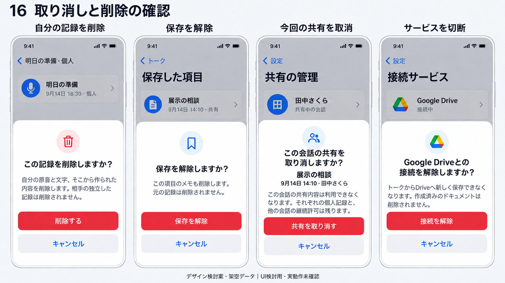
この画像の生成指示
Use case: ui-mockup. Produce a high fidelity original Japanese mobile app design comparison board, landscape 3840x2160 target, FOUR equal portrait screens side by side, each 390x844 proportions. Flat front views, minimal thin rounded frames, no photorealistic device, no perspective. Big crisp legible Japanese glyphs; no tiny text. Use generous margins outside screens for the board title, four panel labels, and footer. The four screens should occupy almost all usable image height. This is a conversation recording / context AI app, NOT a human messaging app or productivity dashboard. STYLE consistently for entire series: elegant iOS-native, restrained Apple hierarchy/proximity and baseline-ui discipline, LINE-like people navigation, Slack-like aligned simple rows. White #FFFFFF main surfaces, very pale gray #F5F6F8 backing, dark navy-black #17202B text, ONE solid blue #245CDF primary accent. SF Pro-like system sans with excellent Japanese; body17pt equivalent, title28pt, section20, metadata14, touch zones48x48 equivalent. Medium regular body, bold only headings. Thin separators, modest rounded16 surfaces, ample breathing room, NO gradients, NO glow, NO huge color cards, NO dense dashboard, NO extraneous icons. Only main bottom tabbar background, recording controls panel, common recording strip may be subtle light iOS Glass. Headers/body/chat/composer/sheets/source lists and start-record CTA are fully OPAQUE. Secondary screens have native back header, no unnecessary bottom tabs. Root bottom tabs exactly "Home" and "トーク" with icon+label. No integration tab, no tasks or calendar tab. All data fictional. Every image must include outside screen footer EXACT "デザイン検討案・架空データ｜UI検討用・実動作未確認". No actual app success verification implied. Consistent fictional person "田中さくら"; shared record "展示の相談", 9月14日14:10, conflicting originals 自分 "展示は土曜にしよう。" and さくら "展示は日曜にしよう。" Never silently resolve conflict. Original input owner is not confirmed speaker. Current on-screen date 9月14日. Fictional personal "明日の準備" 9月14日18:30. No logos of a real product except named integration text. BOARD title "16 取り消しと削除の確認"; panels "自分の記録を削除", "保存を解除", "今回の共有を取消", "サービスを切断". FOUR opaque native-style confirmation sheets within portraitcontexts. Text legible17pt, primary destructive red semanticcolor permitted, cancelblueorgray. No pinkdecorativegradient. All shown BEFORE operation, no fake success. S1 back ownrecord header明日の準備·個人, foreground title "この記録を削除しますか？". Body "自分の原音と文字、そこから作られた内容を削除します。相手の独立した記録は削除されません。". Red "削除する", cancel "キャンセル". S2 background保存した項目, foreground "保存を解除しますか？", body "この項目のメモも削除します。元の記録は削除されません。". Red "保存を解除", cancel. S3 background共有の管理, title "この会話の共有を取り消しますか？", body "この会話の共有内容は利用できなくなります。それぞれの個人記録と、他の会話の継続許可は残ります。". Red "共有を取り消す", cancel. S4 background接続サービス, title "Google Driveとの接続を解除しますか？", body "トークからDriveへ新しく保存できなくなります。作成済みのドキュメントは削除されません。". Red "接続を解除", cancel. Exactbottomfooterstandard. Do not announce completeddeletionoroverwrite. No extra feature text; retain exact specified wording. Root tabs only Home/トーク. Reference is style only. 最終修正指示: Edit only 3rd screen share cancellation confirm. In opaque confirmation sheet add the specific target immediately below heading, bold "展示の相談" and metadata "9月14日14:10 · 田中さくら". It mustidentifyrecordbeforeirreversiblesubmit. Keepexisting cancellationeffect text andredbutton, cancel. Other3screens unchanged. No successfulresultclaim.
17 持ち寄る記録と範囲
本人記録選択／範囲と発言位置／接続失敗／発言0件
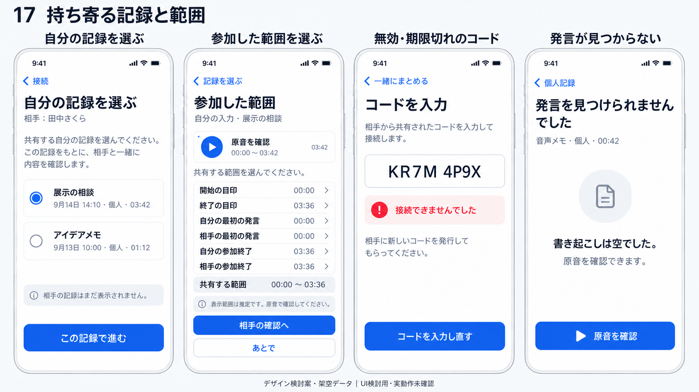
この画像の生成指示
Use case: ui-mockup. Produce a high fidelity original Japanese mobile app design comparison board, landscape 3840x2160 target, FOUR equal portrait screens side by side, each 390x844 proportions. Flat front views, minimal thin rounded frames, no photorealistic device, no perspective. Big crisp legible Japanese glyphs; no tiny text. Use generous margins outside screens for the board title, four panel labels, and footer. The four screens should occupy almost all usable image height. This is a conversation recording / context AI app, NOT a human messaging app or productivity dashboard. STYLE consistently for entire series: elegant iOS-native, restrained Apple hierarchy/proximity and baseline-ui discipline, LINE-like people navigation, Slack-like aligned simple rows. White #FFFFFF main surfaces, very pale gray #F5F6F8 backing, dark navy-black #17202B text, ONE solid blue #245CDF primary accent. SF Pro-like system sans with excellent Japanese; body17pt equivalent, title28pt, section20, metadata14, touch zones48x48 equivalent. Medium regular body, bold only headings. Thin separators, modest rounded16 surfaces, ample breathing room, NO gradients, NO glow, NO huge color cards, NO dense dashboard, NO extraneous icons. Only main bottom tabbar background, recording controls panel, common recording strip may be subtle light iOS Glass. Headers/body/chat/composer/sheets/source lists and start-record CTA are fully OPAQUE. Secondary screens have native back header, no unnecessary bottom tabs. Root bottom tabs exactly "Home" and "トーク" with icon+label. No integration tab, no tasks or calendar tab. All data fictional. Every image must include outside screen footer EXACT "デザイン検討案・架空データ｜UI検討用・実動作未確認". No actual app success verification implied. Consistent fictional person "田中さくら"; shared record "展示の相談", 9月14日14:10, conflicting originals 自分 "展示は土曜にしよう。" and さくら "展示は日曜にしよう。" Never silently resolve conflict. Original input owner is not confirmed speaker. Current on-screen date 9月14日. Fictional personal "明日の準備" 9月14日18:30. No logos of a real product except named integration text. BOARD title "17 持ち寄る記録と範囲"; panels "自分の記録を選ぶ", "参加した範囲を選ぶ", "コードで接続できない", "発言が見つからない". S1 nativeback "接続", title "自分の記録を選ぶ", small partnercontext "相手：田中さくら". ONLYOWN transcriptready recordings shown: radioselected "展示の相談" / "9月14日14:10 · 個人 · 03:42"; unselected "アイデアメモ" / "9月13日10:00 · 個人 · 01:12". Note "相手の記録はまだ表示されません". Main "この記録で進む". Do notself-recordingを共有beforeapproval. S2 nativeback "記録を選ぶ", title "参加した範囲", source "自分の入力 · 展示の相談". Opaque playback row "原音を確認", interval "00:00〜03:42". Short note "声を聞いて、位置を選んでください". Stackedfieldrows "開始の目印 00:00", "終了の目印 03:42", "自分の最初の発言 00:00", "相手の最初の発言 00:15", "最後に参加した位置 03:42". Values examples manuallychosen; help "表示位置は推定です。原音で確認してください". Main "相手の確認へ", secondary "あとで". No other'soriginalbody or guessedvoiceidentity. S3 nativeback "一緒にまとめる", title "コードを入力", input8chars "KR7M 4P9X", inlineerror "接続できませんでした", help "相手に新しいコードを発行してもらってください". Main "コードを入力し直す". Do NOT differentiate reason/codeexistence/partner details; no successcheck. Retryableinvalid/expiredgenericexample. S4 nativeback個人記録 title "発言を見つけられませんでした", ownrecord "音声メモ · 個人 · 00:42", plain "書き起こしは空でした。原音を確認できます。", oneprimary "原音を確認". No inferredsummary/notfakeprocessingfailure/retrycreation. Keepfooterand no added text. This is fictional UI design, not proof theseoperationswork. 最終修正指示: 追加の範囲整合レビュー修正: Edit SECOND and THIRD panels only, preserve layout style andothers. Secondpanel interval/playback TOTAL ownrecordduration remains03:42. Selectionfields must be EXACT: "開始の目印 00:00" "終了の目印 03:36" "自分の最初の発言 00:00" "相手の最初の発言 00:00" "自分の参加終了 03:36" "相手の参加終了 03:36" Remove ambiguoussingle "最後に参加した位置". Both people exchanged initial greetings at00:00, so later originalconflict quotes at00:12/00:15 remainvalid. Add short selectedrange "共有する範囲 00:00〜03:36". Audio total03:42 is longerthan sharedscope, neverenlargethescope. Thesevaluesillustrativehandselected; noautomaticrecognition. THIRDpanel ABOVEphone outside panel label change "コードで接続できない" to "無効・期限切れのコード". Thislabelswhichdesignstateisillustrated. INSIDEapp keepgeneric "接続できませんでした" and newcodeinstructions, do NOT revealotheraccount/codeexistencereason. Do NOT implysamecopyforeverytemporarynetworkfailure. Preservebluebuttonlabels and otherpanels/footer. Tightenverticalgaps forreadablesixfields, do notshrinkbodytocram.